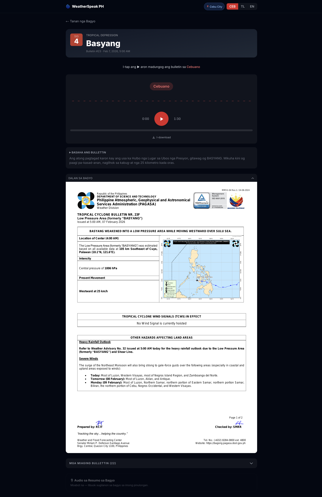

Picture Ronda, on the southwestern coast of Cebu, Philippines. Typhoon Verbena is bearing down on the island. PAGASA has issued a Tropical Cyclone Bulletin: the official word on where the storm is going, how strong it is, and who needs to evacuate.
The bulletin exists. It's public. But it's written in English.
The Philippine Statistics Authority puts functional literacy at 91.6%. In a country of 115 million people, that's nearly 10 million Filipinos who can't reliably make sense of a written document. For most people on that coast, the bulletin might as well be in another language. Because it is.
I'm Cebuano. I know this problem personally, not as a statistic but as something playing out right now in that town. They have phones. There's a TV in the sari-sari store. The technology isn't the gap. The language is.
That's the gap WeatherSpeak PH closes: PAGASA bulletins in Cebuano, Tagalog, and English, with audio, in four minutes.
Every PAGASA bulletin follows the same structure: storm position, intensity, wind speed, signal levels, affected areas, storm track. Exactly the kind of problem a small, fast language model handles well.
Every Gemma 4 model is multimodal. PAGASA bulletins include a storm track chart that text extraction tools are blind to. Gemma 4 can see it and describe it in plain language. That image-to-text step is what makes the radio script useful.
I started with Gemma 4 26B: beautiful translations, but too slow for notebook-driven experimentation. I dropped to Gemma 4 E4B and found the quality gap smaller than expected.
My first instinct was to use Gemma 4 E4B for everything: feed it the PDF, get structured output back. It hallucinated badly. The problem was faithfulness: it wasn't reproducing the bulletin text as written, it was paraphrasing and sometimes inventing. Back to the notebooks. Marker PDF turned out to be near-perfect at faithful text extraction, reproducing the bulletin content exactly as it appeared on the page. But Marker was blind to the storm track chart. Gemma 4 E4B could read that chart and describe the storm's position in plain landmark language. Left to its own devices, it outputs coordinates. Nobody in Ronda knows where 13.9°N, 112°E is. The hybrid was the answer: Marker for text, Gemma 4 for the chart.
The goal isn't translation. It's a community radio announcement. My first attempt generated all three languages in parallel directly from the OCR. The problem: they diverged. English came out consistently richer and more faithful to the source. The model simply performs better in English.
The fix: generate English first, then translate Tagalog and Cebuano from that. The local language scripts are now only as wrong as the English one, which is a much smaller problem.
Hallucinations were a separate fight. Gemma 4 E4B was inventing wind speeds: a footnote tag Marker rendered as <sup>75</sup> that the model read as "75 knots," and a stray coordinate row it mistook for the storm's current position.
The fix: strip the noise before the model sees it, tighten the prompt constraints, and strip the markdown signal tables. The same province/signal data appears in plain prose above the tables, so no information is lost, just the nested markdown the 4B model chokes on.
Coqui XTTS v2 supports English natively, and Tagalog and Cebuano through a Spanish phoneme approximation. The problem was quality: when I heard the Tagalog and Cebuano output, it was bad enough to rule out. That led to Facebook MMS, trained by Meta on multilingual Bible recordings. It has its own quirks, but the way it speaks Cebuano and Tagalog is noticeably better. The choice was also deliberate: self-hostable, open weights, runs on a GPU I control, no per-character billing, no vendor lock-in. Better commercial options probably exist. I'd rather own the stack.
MMS comes with caveats that had real ETL consequences. It doesn't understand capitalisation or punctuation, so every script needs pre-processing before it reaches the model: lowercase everything, strip punctuation, and phonetically respell any English words that slip through. Building that pre-processing step into the pipeline was non-trivial: forecast → por-kast, evacuation → i-ba-kyu-we-syon, coastal → kos-tal. Over 30 mappings in total.
Speed tuning was its own problem. The MMS voices speak at different natural rates, so each language needed separate calibration: Cebuano at 1.40×, Tagalog at 1.35×. At 1.5×, Cebuano sounds like a chipmunk.
English stays on Coqui XTTS v2, where it handles casing and punctuation natively and sounds noticeably more polished. The contrast in quality between the English and Cebuano/Tagalog audio is real. It's an uncomfortable reminder of why this project exists.
I built the pipeline on Modal with compute matched to each step: OCR and script generation on A10G GPU, three parallel TTS containers for Cebuano, Tagalog, and English, then a CPU container for the Supabase upload.
One architectural decision made everything easier: the pipeline code is fully modular, and the same modules run in both the ETL and the Jupyter notebooks. When I iterate on a prompt in a notebook, the output is identical to what the production ETL produces. There's no "works in the notebook, breaks in production" problem. The notebook and the ETL are running the same code.
Ollama runs Gemma 4 E4B in both environments: locally during notebook iteration, and on Modal's A10G in production. Same API, same model weights, different hardware. That's what keeps the notebook and ETL outputs identical.
Modal also removed the need for any orchestration or triggering infrastructure. No scheduler, no cron job, no cloud VM sitting idle. The trigger is a single command from my laptop: uv run modal run modal_etl/run_batch.py. Modal provisions the GPU, runs the pipeline, and tears down. All the compute is in the cloud; the trigger is local.
Script generation originally ran all three languages sequentially: one container, one Ollama instance, ~4 minutes wall time. Refactoring to one container per language brought that down to ~1.5 minutes.
When a bulletin came out with the wrong wind speed from a hallucination bug, I didn't want to reprocess the entire archive. So I built two flags: --stem to target a single bulletin by name, --force to overwrite existing outputs.
Building all of that taught me where Gemma 4 E4B is reliable: clean inputs, predictable schema, clear prompt, no noise. It follows style constraints well, reads a storm chart, and does all of this at E4B speed.
Where it falls down is noisy context. Stray OCR artefacts, complex nested tables, long prompts that trigger repetition. Any of these cause hallucinations. The fix is upstream: clean the input, scope the task.
Fine-tuning is the obvious next lever. I left it for later.
The target user is on a cheap Android handset. Every design decision follows: 64px play button, audio-first layout, one-tap language toggle.
The first time I switched the toggle to Cebuano and hit play, and heard a typhoon warning come out in the language my Lola speaks, that was the moment the whole project felt real. That's what this is for.
Language drives everything: which audio plays, which script is shown. Offline MP3 download is supported for where mobile data is intermittent.

Any PAGASA bulletin PDF goes in. Cebuano, Tagalog, and English radio scripts and audio come out, end-to-end in four minutes.
Eleven notebooks and 33 pull requests. The storm archive is live, audio is playable from any mobile browser, and every bulletin can be downloaded as an MP3.
Next, I'll add live PAGASA ingestion, triggering automatically when a new bulletin drops. I'll also test Gemma 4 26B to see if the quality gain justifies the cost.
Longer term: Ilocano, Waray, Hiligaynon and 180+ other dialects. Adding a new dialect is a prompt change. The bottleneck is TTS. Low-resource dialects have few options, and that's bigger than this project.
Typhoon Verbena is still on track toward southwestern Cebu. The PAGASA bulletin exists. So does an audio file in Cebuano, generated in four minutes by a batch pipeline on a cloud GPU, ready to play on my Lola's phone.
Digital equity isn't about giving people smartphones. Most of them already have one. It's about making the information on those phones useful in the language they think in. The code and model are open source, and nothing here is specific to the Philippines. Any language, any country, any disaster alert system.